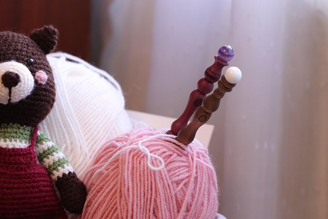

🧶 A Journey of Love & Crochet 🧸
When I was pregnant, life took on a new rhythm—one filled with anticipation, dreams, and the quiet moments of waiting. It was during this time that I stumbled upon the art of crochet. What started as a simple pastime soon became a passion, a source of joy, and a beautiful way to express love.
With each stitch, I felt a deep connection—not just to the yarn in my hands, but to the little life growing inside me. I made tiny crochet toys, each one crafted with care and warmth, imagining the joy they would bring. Crochet wasn’t just a hobby; it became a journey—one that was unique, interesting, and sometimes even funny (especially when my first few attempts turned into unrecognizable shapes!).
But that’s the beauty of crochet—it’s full of surprises, creativity, and endless possibilities. Every loop and knot tells a story, a story of patience, love, and the magic of creating something from scratch.
💖 Let’s crochet, let’s create, let’s make magic with our hands! 🎀✨
